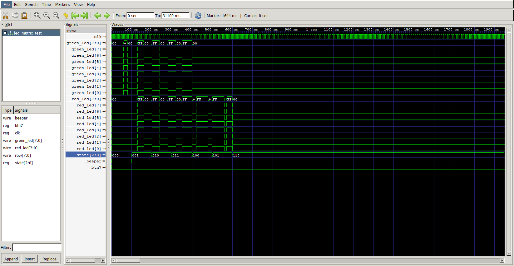

数字系统设计实验报告——水位监测
设计课题的任务要求
模拟一个水位监测系统，通过控制点阵、数码管等显示水位信息，当水位超出范围时进行报警，具体情况和系统功能要求如下：
基本要求
-
通过
SW4~SW0的值来确定当前水位，其中SW4~SW1表示整数位，SW0表示小数位，0~6米（含）为安全水位，6~12米（含）为警惕水位，12米以上为危险水位。 -
用数码管
DISP2~DISP0显示水位数值，显示到小数点后1位。 -
用点阵显示水位变化示意图：当水位低于等于
6米时，点阵最下面2行显示全绿；当水位在“警惕水位”时，点阵显示黄色，6~8米（含）时，亮下面3行，8~10米（含）时，亮下面4行，10~12米（含）时，亮下面5行；当水位在“危险水位”，点阵显示红色，12~13米（含）时，亮下面6行，13~14米（含）时，亮下面7行，14米以上时，点阵全亮，且以2Hz的频率闪烁。 -
水位处于“警惕水位”或“危险水位”时，蜂鸣器发出报警声，报警声音的音调随水位增高而增高。
-
水位处于“危险水位”时，按
BTN0启动点阵动画模拟水泵抽水，抽水动画自行设计，直至水位降至“安全水位”，点阵恢复显示水位变化。 -
水泵抽水速度“慢”、“中”、“快”三档可调，在数码管
DISP7上分别显示1、2、3表示三种速度，通过BTN7按键进行循环切换，不同速度时抽水动画的变化速度也同步进行变化。
提高要求
-
水位值可通过
4x4键盘输入。 -
自拟其他功能。
模块电路要求
在8x8双色点阵上设计并实现水泵抽水的动画显示，动画图案自行设计，要求完成仿真并在实验板上下载显示。
系统设计
设计思路
以功能要求作为模块区分的参考，同时针对开发板的实际硬件区分和功能实现，我对整个程序进行了以下的模块拆分：
| water_detection | key_input | kv_map | beep | div_clk |
|---|---|---|---|---|
| 主模块 | 按键输入模块 | 按键功能映射模块 | 蜂鸣器模块 | 分频器模块 |
| debounce | digi_screen | controller | led_disp |
|---|---|---|---|
| 按键消抖模块 | HEX到LED点阵译码模块 | LED点阵控制模块 | 数码管控制模块 |
| segment7 | select_disp | led_matrix |
|---|---|---|
| 数码管译码模块（包含小数点） | 数码管选位信号模块 | LED点阵动画显示模块 |
总体框图

分块设计
-
water_detection：顶层模块，负责将所有模块实例化。 -
key_input：IO，读取按键输入、消抖，并转成对应的脉冲信号 -
kv_map：Key-Value模块，将key_input的输入转成对应的指令进行控制，使输入的拓展性大大增加。 -
beep：IO，根据传入的状态调节音调。 -
div_clk：基本模块，可以对系统时钟进行分频，支持修改参数。 -
debounce：基本模块，用于单个按钮的消抖。 -
digi_screen：基本模块，用于将HEX转成LED矩阵数据。 -
controller：控制器，可以将输入的8421BCD码数字转成二进制数并比较，得到当前的水位状态。 -
led_disp：IO，负责数码管的相关显示。 -
segment7：译码器，实现8421BCD码到人类可读数码管的译码。 -
select_disp：脉冲分配器，用于生成数码管的选位信号。 -
led_matrix：IO，负责LED点阵的相关显示。
Verilog HDL 代码
water_detection.v
// water_detection.v
module water_detection(
input wire clk, // 系统时钟
input btn7, // 水泵挡位
input btn0, // 水泵开关
input [3:0] row_in,
output [3:0] col,
output [6:0] segment7, // 数码管信号
output [7:0] row,
output [7:0] green_led,
output [7:0] red_led,
output [7:0] select, // 数码管选位信号
output beep,
output dp // 小数点信号
);
wire [3:0] key;
wire [3:0] value;
wire [7:0] number; // 整数部分
wire [2:0] state; // 水位状态
wire [1:0] Anime_state; // 水泵状态
wire beeper;
// 模块实例化部分，具体内容参考后续代码
key_input key_input1(
.clk(clk),
.row(row_in),
.col(col),
.key(key)
);
kv_map kv_map1(
.key(key),
.value(value)
);
led_disp led_disp1(
.clk(clk),
.key(value),
.select(select),
.segment7x(segment7),
.number_out(number),
.dp(dp),
.Anime_state(Anime_state),
.state(state)
);
controller controller1(
.clk(clk),
.number(number),
.btn0(btn0),
.state(state)
);
led_matrix led_matrix1(
.clk(clk),
.state(state),
.btn7(btn7),
.red_led(red_led),
.green_led(green_led),
.row(row),
.beeper(beeper),
.Anime_state(Anime_state)
);
beep beep1(
.clk(clk),
.beep_en(beeper),
.state(state),
.beep_out(beep)
);
endmodule
key_input.v
// key_input.v
module key_input(
input wire clk, //1khz
input wire [3:0] row,
output reg [3:0] col,
output reg [3:0] key //已经消抖并且产生一周期信号的脉冲，默认空信号为1111
);
reg [3:0] key_unconfirmed;
reg [31:0] counter;
reg [3:0] key_pre;
initial begin
col = 4'b1110;
counter = 0;
key_pre = 4'b1111;
key_unconfirmed = 4'b1111;
key = 4'b1111;
end
// 选位信号发生器
always @(negedge clk) begin
col <= {col[2:0],col[3]};
end
// 同步检测
always @(posedge clk) begin
case(row)
4'b1110: begin
case(col)
4'b1110: key_unconfirmed = 4'b0000;
4'b1101: key_unconfirmed = 4'b0001;
4'b1011: key_unconfirmed = 4'b0010;
4'b0111: key_unconfirmed = 4'b0011;
endcase
end
4'b1101: begin
case(col)
4'b1110: key_unconfirmed = 4'b0100;
4'b1101: key_unconfirmed = 4'b0101;
4'b1011: key_unconfirmed = 4'b0110;
4'b0111: key_unconfirmed = 4'b0111;
endcase
end
4'b1011: begin
case(col)
4'b1110: key_unconfirmed = 4'b1000;
4'b1101: key_unconfirmed = 4'b1001;
4'b1011: key_unconfirmed = 4'b1010;
4'b0111: key_unconfirmed = 4'b1011;
endcase
end
4'b0111: begin
case(col)
4'b1110: key_unconfirmed = 4'b1100;
4'b1101: key_unconfirmed = 4'b1101;
4'b1011: key_unconfirmed = 4'b1110;
4'b0111: key_unconfirmed = 4'b1111;
endcase
end
default: key_unconfirmed = 4'b1111;
endcase
end
// 消抖
always@(negedge clk) begin // 每次在下降沿检测
if (key_unconfirmed != 4'b1111) begin
if (key_pre == key_unconfirmed) begin
if (counter == 60) begin // 检测到连续不断的60次key才认可这次输入
key = key_unconfirmed;
counter = 0;
end else begin
counter = counter + 1;
end
end else begin
counter = 0;
key_pre = key_unconfirmed;
end
end else begin
key = 4'b1111;
end
end
endmodule
kv_map.v
// kv_map.v
module kv_map(
input [3:0] key,
output reg [3:0] value //将4*4的键盘映射到8421BCD码&点和清零
);
// 代码简单，主要是提高可读性和可拓展性
always @(*) begin
case(key)
4'b0000: value = 4'b0000; //0
4'b1100: value = 4'b0001; //1
4'b1101: value = 4'b0010; //2
4'b1110: value = 4'b0011; //3
4'b1000: value = 4'b0100; //4
4'b1001: value = 4'b0101; //5
4'b1010: value = 4'b0110; //6
4'b0100: value = 4'b0111; //7
4'b0101: value = 4'b1000; //8
4'b0110: value = 4'b1001; //9
4'b0001: value = 4'b1010; //dot
4'b0010: value = 4'b1011; //reset
default: value = 4'b1111;
endcase
end
endmodule
div_clk.v
// div_clk.v
module div_clk #(
parameter DIVISOR = 100 // 默认100
)(
input wire clk_in, // 系统时钟
input wire rst, // 复位
output reg clk_out // 输出分频结果
);
reg [9:0] counter; // 计数器，最高支持分频2^10
initial begin
clk_out = 0;
counter = 0;
end
always @(negedge clk_in or posedge rst) begin // 异步复位
if (rst) begin
counter <= 0;
clk_out <= 0;
end else begin
if (counter == (DIVISOR/2 - 1)) begin
clk_out <= ~clk_out;
counter <= 0;
end else begin
counter <= counter + 1;
end
end
end
endmodule
select_disp.v
// select_disp.v
module select_disp ( //选位信号
input wire clk, // 输入时钟
input wire rst_n, // 低电平有效的复位
output reg [3:0] out // 4位输出（适应于这次的实验）
);
initial begin
out = 4'b0111;
end
always @(posedge clk) begin
if (!rst_n) begin
out <= 4'b0111;
end else begin
out <= {out[2:0], out[3]}; // 左移一位
end
end
endmodule
segment7.v
// segment7.v
module segment7(
input [3:0] num, // 四位输入信号
input dp_in, // 小数点
output reg [6:0] seg7, // 数码管信号
output reg dp
);
always @(num) begin
case(num)
4'b0000:seg7=7'b1111110;
4'b0001:seg7=7'b0110000;
4'b0010:seg7=7'b1101101;
4'b0011:seg7=7'b1111001;
4'b0100:seg7=7'b0110011;
4'b0101:seg7=7'b1011011;
4'b0110:seg7=7'b1011111;
4'b0111:seg7=7'b1110000;
4'b1000:seg7=7'b1111111;
4'b1001:seg7=7'b1111011;
default:seg7=7'b0000001;
endcase
end
always @(dp_in) begin
dp = dp_in;
end
endmodule
led_disp.v
// led_disp.v
module led_disp(
input clk, // 系统时钟
input [3:0] key, // 输入指令脉冲
output [7:0] select,
output [6:0] segment7x,
output [7:0] number_out, // 用户输入的结果
output dp,
input [1:0] Anime_state, // 动画状态，和下方的state共同控制风扇转速显示
input [3:0] state
);
reg [3:0] num;
reg [11:0] number;
reg dp_in;
wire [3:0] select_n;
initial begin
number = 12'hfff;
num = 4'b0000;
dp_in = 1'b0;
end
always @(negedge clk) begin
if (key != 4'b1111) begin
if (key == 4'b1011) begin
number = 12'hfff;
end else begin
number = {number[7:0],key}; // 将用户输入储存下来，并移位
end
end
end
select_disp slct( // 实例化选位信号
.clk(clk),
.rst_n(1'b1),
.out(select_n)
);
segment7 decoder( // 实例化译码器
.dp_in(dp_in),
.num(num),
.seg7(segment7x),
.dp(dp)
);
assign number_out = number[11:4]; // 取整数部分
assign select = {select_n[3],4'b1111,select_n[2:0]}; // 选位信号生成
always@(select_n) begin
// select_n主要功能是显示对应数码管的数字，并将值传入数码管对应管脚
case(select_n)
4'b1110:begin
num <= number[3:0];
dp_in<=1'b0;
end
4'b1101:begin
num <= number[7:4];
dp_in<=1'b1;
end
4'b1011:begin
num <= number[11:8];
dp_in<=1'b0;
end
4'b0111:begin
if (state == 3'b111) begin // 要是水泵工作模式
case(Anime_state) // 根据Anime_state 显示对应挡位
2'b00:begin num = 4'b0001; dp_in<=1'b0;end
2'b01:begin num = 4'b0010; dp_in<=1'b0;end
2'b10:begin num = 4'b0011; dp_in<=1'b0;end
endcase
end else begin
num <= 4'b1111;
dp_in<=1'b0;
end
end
default: begin num = 4'b1111; dp_in<=1'b0;end
endcase
end
endmodule
digi_screen.v
// digi_screen.v
// https://xantorohara.github.io/led-matrix-editor
module digi_screen
(
input wire clk,
input [63:0] PICTURE_G, // 64*64 picture
input [63:0] PICTURE_R, // 64*64 picture
output reg [7:0] row,
output reg [7:0] col_r,
output reg [7:0] col_g
);
initial begin
row = 8'b0111_1111;
end
always@(negedge clk) begin // 行扫描信号
row <= {row[6:0], row[7]};
end
always@(negedge clk) begin //列信号，主要是对信号做分配
case(row)
8'b1111_1110: begin
col_r <= PICTURE_R[15:8];
col_g <= PICTURE_G[15:8];
end
8'b1111_1101: begin
col_r <= PICTURE_R[23:16];
col_g <= PICTURE_G[23:16];
end
8'b1111_1011: begin
col_r <= PICTURE_R[31:24];
col_g <= PICTURE_G[31:24];
end
8'b1111_0111: begin
col_r <= PICTURE_R[39:32];
col_g <= PICTURE_G[39:32];
end
8'b1110_1111: begin
col_r <= PICTURE_R[47:40];
col_g <= PICTURE_G[47:40];
end
8'b1101_1111: begin
col_r <= PICTURE_R[55:48];
col_g <= PICTURE_G[55:48];
end
8'b1011_1111: begin
col_r <= PICTURE_R[63:56];
col_g <= PICTURE_G[63:56];
end
8'b0111_1111: begin
col_r <= PICTURE_R[7:0];
col_g <= PICTURE_G[7:0];
end
default: begin
col_r <= 8'h00;
col_g <= 8'h00;
end
endcase
end
endmodule
led_matrix.v
// led_matrix.v
module led_matrix(//在8x8的led矩阵上显示动画，同时发出蜂鸣器声音，包含七个水位挡位，和一位按钮控制动画状态
input clk,
input [2:0] state,
input btn7,
output [7:0] red_led,
output [7:0] green_led,
output [7:0] row,
output reg beeper,
output reg [1:0] Anime_state
);
wire clk_div_r2;
wire clk_low;
wire clk_middle;
wire clk_high;
wire key_pulse;
div_clk #( // 水泵1挡
.DIVISOR(1000)
)
div_clk_low (
.clk_in(clk),
.rst(),
.clk_out(clk_low)
);
debounce dbsa( // 按键消抖
.clk(clk),
.rst(),
.key(btn7),
.key_pulse(key_pulse)
);
div_clk #( // 水泵2挡
.DIVISOR(500)
)
div_clk_mid (
.clk_in(clk),
.rst(),
.clk_out(clk_middle)
);
div_clk #( // 水泵3挡
.DIVISOR(250)
)
div_clk_high (
.clk_in(clk),
.rst(),
.clk_out(clk_high)
);
div_clk #( // 水泵动画2Hz分频
.DIVISOR(500)
) div_clk_2Hz (
.clk_in(clk),
.rst(),
.clk_out(clk_div_r2)
);
reg [63:0] r_led;
reg [63:0] g_led;
initial begin
beeper = 1'b0;
Anime_state = 2'b00;
r_led = 0;
g_led = 0;
end
always@(posedge key_pulse) begin // 模3计数器，用于控制水泵速度
if (Anime_state == 2'b10)
Anime_state = 2'b00;
else
Anime_state = Anime_state + 1;
end
digi_screen digi_screen_red ( // 8*8LED点阵模块实例化
.PICTURE_G(g_led),
.PICTURE_R(r_led),
.clk(clk),
.row(row),
.col_r(red_led),
.col_g(green_led)
);
always@(negedge clk)begin
case(state)
3'b000:begin g_led =64'hffff000000000000;r_led = 64'h0000000000000000; beeper = 1'b0;end
3'b001:begin g_led =64'hffffff0000000000;r_led = 64'hffffff0000000000; beeper = 1'b1;end
3'b010:begin g_led =64'hffffffff00000000;r_led = 64'hffffffff00000000; beeper = 1'b1;end
3'b011:begin g_led =64'hffffffffff000000;r_led = 64'hffffffffff000000; beeper = 1'b1;end
3'b100:begin g_led =64'h0000000000000000;r_led = 64'hffffffffffff0000; beeper = 1'b1;end
3'b101:begin g_led =64'h0000000000000000;r_led = 64'hffffffffffffff00; beeper = 1'b1;end
3'b110:begin // 动画设计
case(clk_div_r2)
1'b0:begin g_led =64'h0000000000000000;r_led = 64'h0000000000000000; end
1'b1:begin g_led =64'h0000000000000000;r_led = 64'hffffffffffffffff; end
endcase
beeper = 1'b1;
end
3'b111:begin
case(Anime_state)
2'b00:begin
case(clk_low)
1'b0:begin g_led =64'h0000000000000000;r_led = 64'ha4e4ffe4e4bf1e3f; end
1'b1:begin g_led =64'h0000000000000000;r_led = 64'hb1eae4eaf1bf1e3f; end
endcase
beeper = 1'b1;
end
2'b01:begin
case(clk_middle)
1'b0:begin g_led =64'h0000000000000000;r_led = 64'ha4e4ffe4e4bf1e3f; end
1'b1:begin g_led =64'h0000000000000000;r_led = 64'hb1eae4eaf1bf1e3f; end
endcase
beeper = 1'b1;
end
2'b10:begin
case(clk_high)
1'b0:begin g_led =64'h0000000000000000;r_led = 64'ha4e4ffe4e4bf1e3f; end
1'b1:begin g_led =64'h0000000000000000;r_led = 64'hb1eae4eaf1bf1e3f; end
endcase
beeper = 1'b1;
end
endcase
end
endcase
end
endmodule
controller.v
// controller.v
module controller(
input wire clk,
input [7:0] number,
input wire btn0,
output reg [2:0] state
);
wire key;
reg [6:0] integer_value;
reg mode; // 水泵工作状态
initial begin
mode = 0;
integer_value = 7'b000_0000;
end
// 处理按钮切换模式
debounce dbs ( // 状态按钮消抖
.clk(clk),
.rst(1'b0),
.key(btn0),
.key_pulse(key)
);
always@(posedge key) begin
mode =~mode;
end
// 处理number和dp_list，计算state
always @(*) begin
integer_value =number[7:4] * 10+number[3:0];
// 根据模式设置state
if (mode && integer_value >= 14) begin
state = 3'b111;
end else begin
if (integer_value < 6) begin
state = 3'b000;
end else if (integer_value < 8) begin
state = 3'b001;
end else if (integer_value < 10) begin
state = 3'b010;
end else if (integer_value < 12) begin
state = 3'b011;
end else if (integer_value < 13) begin
state = 3'b100;
end else if (integer_value < 14) begin
state = 3'b101;
end else begin
state = 3'b110;
end
end
end
endmodule
beep.v
// beep.v
module beep(
input clk,
input beep_en,
input [2:0] state,
output beep_out
);
// 以下分频可以根据状态控制音调
wire beep_out_state0,beep_out_state1,beep_out_state2,beep_out_state3,beep_out_state4,beep_out_state5;
div_clk #(.DIVISOR(12)) div_clk_beep1 (.clk_in(clk),.rst(),.clk_out(beep_out_state0));
div_clk #(.DIVISOR(10)) div_clk_beep2 (.clk_in(clk),.rst(),.clk_out(beep_out_state1));
div_clk #(.DIVISOR(8)) div_clk_beep3 (.clk_in(clk),.rst(),.clk_out(beep_out_state2));
div_clk #(.DIVISOR(6)) div_clk_beep4 (.clk_in(clk),.rst(),.clk_out(beep_out_state3));
div_clk #(.DIVISOR(4)) div_clk_beep5 (.clk_in(clk),.rst(),.clk_out(beep_out_state4));
div_clk #(.DIVISOR(2)) div_clk_beep6 (.clk_in(clk),.rst(),.clk_out(beep_out_state5));
assign beep_out = !beep_en ? 1'b0 : state == 3'b000) ? 1'b0 :
(state == 3'b001) ? beep_out_state0 :
(state == 3'b010) ? beep_out_state1 :
(state == 3'b011) ? beep_out_state2 :
(state == 3'b100) ? beep_out_state3 :
(state == 3'b101) ? beep_out_state4 :
(state == 3'b110) ? beep_out_state5 :
(state == 3'b111) ? beep_out_state5 :
1'b0;
endmodule
debounce.v
// debounce.v
module debounce(
input clk,
input rst,
input key,
output reg key_pulse
);
reg [3:0] cnt;
reg flag ;
initial begin
cnt <= 4'b0000;
key_pulse <= 1'b0;
flag = 1'b0;
end
always @(posedge clk) begin
if (rst) begin
cnt <= 4'b0000;
key_pulse <= 1'b0;
flag = 1'b0;
end else if (key) begin
if (cnt == 4'b1111 && flag == 1'b0 ) begin
// 计数器数到16并且这16个周期内状态无变化则表示按键按下去了
key_pulse = 1'b1;
flag = 1'b1;
cnt = 4'b0000;
end else if (cnt != 4'b1111) begin
cnt = cnt + 4'b0001;
key_pulse = 1'b0;
end else begin
key_pulse = 1'b0;
flag = 1'b1;
end
end else if (!key) begin
flag = 0;
end
end
endmodule
仿真波形及波形分析
beep.v 仿真波形

不难看出，随着状态码的变化，beep_out的频率也随之发生变化，beep_en起到了使能的作用。
key_input.v仿真波形
当连续60次扫描到按键按下时，就会产生一个脉冲信号。
led_matrix.v 仿真波形

在前期，状态控制码较小时，此时绿灯红灯亮灭情况如上，黄灯即是红灯和绿灯均亮的时刻，注意到在黄灯及以上状态时beeper使能信号正常工作。
在水位超出警戒线后，按下btn7则屏幕开始显示抽水动画。
在指定的肉眼可分辨频率下进行图像的切换。
总体仿真因时间过长在此不再进行，具体情况可以烧录进开发版后自行测试。
功能说明及资源利用情况
实现的功能
-
通过
SW4~SW0的值来确定当前水位，其中SW4~SW1表示整数位，SW0表示小数位，0~6米（含）为安全水位，6~12米（含）为警惕水位，12米以上为危险水位。 -
通过
4x4键盘输入水位值。 -
用点阵显示水位变化示意图：当水位低于等于
6米时，点阵最下面2行显示全绿；当水位在“警惕水位”时，点阵显示黄色，6~8米（含）时，亮下面3行，8~10米（含）时，亮下面4行，10~12米（含）时，亮下面5行；当水位在“危险水位”，点阵显示红色，12~13米（含）时，亮下面6行，13~14米（含）时，亮下面7行，14米以上时，点阵全亮，且以2Hz的频率闪烁。 -
水位处于“警惕水位”或“危险水位”时，蜂鸣器发出报警声，报警声音的音调随水位增高而增高。
-
水位处于“危险水位”时，按
BTN0启动点阵动画模拟水泵抽水，抽水动画自行设计，直至水位降至“安全水位”，点阵恢复显示水位变化。 -
水泵抽水速度“慢”、“中”、“快”三档可调，在数码管
DISP7上分别显示1、2、3表示三种速度，通过BTN7按键进行循环切换，不同速度时抽水动画的变化速度也同步进行变化。
资源利用情况
编译结果
可以看到，源代码顺利通过编译。
资源利用情况

可以看到，总共有504个逻辑元件。
故障及问题分析
1. 按键输入故障
- 问题描述：按键可能因为硬件损坏或软件消抖处理不当导致输入错误。
- 分析：检查
key_input.v和debounce.v模块，确保消抖逻辑正确实现，以及硬件按键是否物理损坏。
2. 数码管显示错误
- 问题描述：数码管可能因为译码错误或选位信号不正确而显示错误。
- 分析：检查
segment7.v和select_disp.v模块，确保数码管译码和选位信号生成正确。
4. 水位监测逻辑错误
- 问题描述：水位监测逻辑可能因为状态判断错误导致报警或水泵控制不当。
- 分析：检查
controller.v模块，确保水位状态判断和水泵控制逻辑正确。
7. 资源利用不足或浪费
- 问题描述：资源利用不足可能导致功能无法实现，资源浪费可能导致成本增加。
- 分析：根据资源利用情况，优化设计，减少不必要的资源占用。
总结和结论
本设计成功实现了一个水位监测系统，通过控制点阵、数码管等显示水位信息，并在水位超出范围时进行报警。系统功能包括水位监测、水泵抽水模拟、报警声控制等，满足了基本和提高要求。
通过仿真波形和资源利用情况分析，系统各模块功能正常，资源利用合理。仿真波形验证了各模块的正确性，资源利用情况显示系统在资源限制内实现了所需功能。
后续工作包括在实际硬件上测试系统，优化设计以减少资源占用，以及根据测试结果进行故障排查和系统优化。通过这些工作，可以进一步提高系统的稳定性和可靠性。
最后修改于 2024-12-21